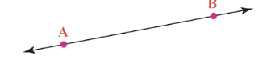
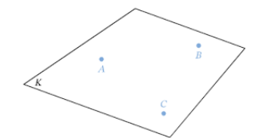

Undefined Terms
Undefined terms are fundamental units used to define other terms in geometry. These terms do not have formal definitions but are essential for understanding geometric concepts.
There are three main undefined terms in geometry:
- Point: A location in space with no dimensions.
- Line: A continuous set of points extending infinitely in two directions. 
- Plane: A flat surface that extends infinitely in all directions. 
Relations of Undefined Terms
- There is always one line between any two points.
- There is always one plane containing any three points.
- The intersection of two lines is a point.
- The intersection of two planes is a line.
High-Level Concept
Undefined terms help represent dimensions in space:
- Points represent zero dimensions.
- Lines represent one dimension.
- Planes represent two dimensions.
Defined Terms
Defined terms have formal definitions based on the undefined terms. Some important defined terms in geometry include:
- Line Segment: A section of a line between two points.
- Ray: A part of a line that starts at a point and extends infinitely.
- Angle: Formed by two rays or line segments sharing a vertex.
Naming Terms
- Points: Represented by a single letter.
- Lines: Named after two points on the line, shown with a line symbol.
- Line Segments: Named by their endpoints with a segment bar.
- Rays: Named with two points, starting with the endpoint and a ray symbol.
- Planes: Named using three non-collinear points.
- Angles: Named using three points, with the vertex in the middle.
Test Your Knowledge
Click on the buttons below to try out interactive questions based on the content you've learned: